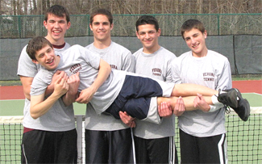
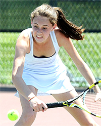
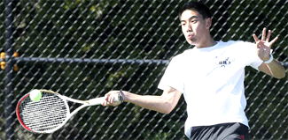
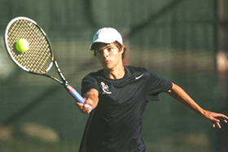
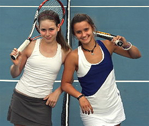
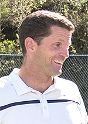

Previous: Classic Lessons TOC | 🏠 Classic Lessons Home | Next: Common Pitfalls in Spanish Forehand
Coaching High School Tennis
Comprehensive unified tennis knowledge base — Fundamentals, Stroke Analysis, Reference Library, and more
Coaching High School Tennis
Roy Gessford

High school tennis can create a sport and friendships that last for life.
With less than 1 percent of high school athletes receiving a college scholarship, the high school team is the pinnacle of many athletes' experience. A tennis team can be a positive experience that inspires friendships and play over a lifetime, or a negative experience that results in a player losing interest in the sport completely.
Coaching a high school tennis team is a dynamic endeavor. It is also a huge responsibility. The student athletes are full of energy and coaches have a great opportunity to help players in their growth toward being successful athletes and young adults.
The skill set needed to be a great tennis coach is different from those needed to be a great tennis player. When I look back at the coaches, I most enjoyed coaching against and whose team members enjoyed playing for them the most, I see very few professional or even collegiate level tennis players. Instead, I see school teachers, basketball coaches, dentists and a city manager.

What does it mean to be a role model?
Role Models
At the first team meeting every year I ask my players, "Who considers themselves a role model?" At first only a few hands would go up.
But I wanted each player to know that I considered them a role model. Every time my players took to the court, they represented their schools and families as well as themselves. I would continue to ask the question and was not satisfied until each player raised his or her hand.
As a coach you need to be sure that your schedule includes competitive matches. If you have a weaker squad and schedule only strong teams, you had better be good at giving speeches on overcoming discouragement.
If your team is strong, seek out strong teams to play against, even if they are not from your area. In either case of a strong or weak team, the balance of appropriate matches may need to take place in non-league matches.
Each season and each team are unique. For your players there is a level of challenge that is enough to move them forward without being so difficult that they quite, or so facile that they get complacent.
The prospect of cutting players includes the possibility of taking away a student's opportunity to gain a love for the sports they could play for a lifetime. If the varsity becomes too large, form a junior varsity or Varsity A and Varsity B team. When high school tennis coaches have no-cuts policies, tennis in the community grows.

Who plays number one can mean a great deal individually and to the team.
A short run and quick stretch before practice is important for the kids to loosen up. It also allows the individual to be surrounded by their teammates and feel the energy of the group. Most importantly, I used this time to gauge the mood of the team. I adjusted the practice level accordingly.
The Number One Player
Who to play at the top of the singles lineup? The answer can often mean a great deal to the player and the program.
A player may remember the opportunity to play number 1 for the rest of his or her life. The program is often defined by how that player represents the school.
But how to determine your best player is not always easy. Some years a player is so dominant that there is little doubt who should fill the number one spot. Other years a coach may have four players at the same level.
As a coach you must find the balance in letting players challenge for the top spot. Too many challenge matches may lead to backbiting while too few may leave players smug or stagnant. What worked best for me as a coach was to have challenge matches at the beginning of the season and then have one or two periods when challenges were allowed during the season.

When they learn to make pressure volleys players love the net.
Doubles
In high school tennis when two even teams square off, more often than not the match will be decided by the lowest doubles team. This is the reason I coach every player to angle volleys away at the net. We played to win, even when we lost. It took a lot of trust on the part of the players to continue with a strategy if it was not initially successful. But as soon as they started making volleys in pressure situations, I could not keep them off the net.
Disputes
From my experience 90 percent of all disagreements between players stem from line calls and from keeping score. Most of the time when players lose track of the score it because the server did not call out the score at the start of the point.
From day 1, I will not let the players start a point without first agreeing on the score. If the opponent does not call out the score, I teach players to politely ask the server to call the score out loud.

Having teammates--one of the most beautiful aspects of high school tennis.
If the habit of not calling the score is engrained, I teach my players to let the serve go without making an effort to return, or to catch the ball. The returner then asks the server to please announce the score and then gives the server a first serve.
As for line calls, "Are you sure?" is an ineffective question. The better question is "Will you please point to the spot on the court where you saw the ball land?" I encourage players to question one or two line calls, but if blatant bad calls persist to ask the coaches to provide a line judge.
Staying to the End
One of the most beautiful aspects of competing on a tennis team is that you have teammates who are counting on your support. Therefore, I made it a team policy that you had to stay and support your teammates until the last match finished. You may not be the most popular coach on campus the first day or two after implementing a rule requiring that players stay until the entire match is finished, but if popularity is a big reason you are coaching, you are in the profession for the wrong reasons.

Roy Gessford was a championship high school player In Los Angeles who played college tennis at the University of Californa, San Diego. From there he went on to play internationally in France and Mexico as well as across the United States. He has coached girls' and boys' high school tennis teams at schools in the Monterey Peninsula area in California for almost 20 years, and also directed an annual team invitational tournament. During the same period he was also the director of junior development at Carmel Valley Ranch, where he developed high school players who were finalists in over 20 individual sectional championships. Click Here to email Roy!
Source: tennisplayer.net archive — Coaching High School Tennis.docx (John Yandell teaching library, 2002-2022). Extracted and rendered as HTML for Tennis Future Lab.